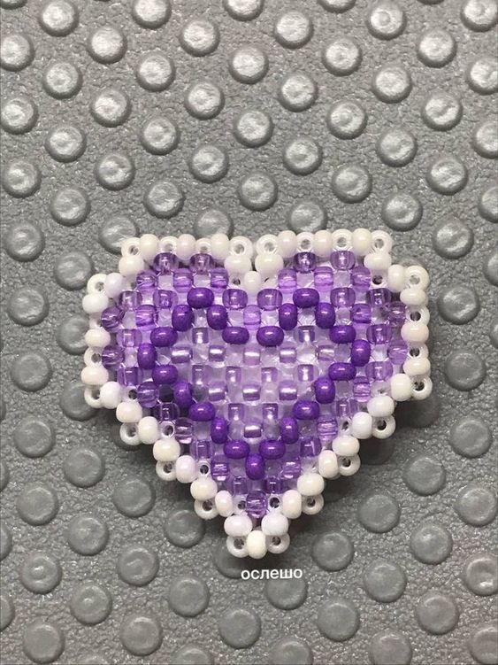

- круглый,
- цилиндрический (делика);
- рубка,
- стеклярус,
- фигурный.
Бисер
Виды и типы бисера по форме Бисер бывает:

Что нужно купить новечку: бисер (для новечка подойдет и китайский ) леску иголку для бисераочень тонкую палитру для бсера( с ней будет удобней)
Техники: Ткачество Параллельное плетение Французское плетение Плетение «елочка» (ндебеле) Игольчатое плетение Кирпичный стежок Мозаичное плетение (пейот) Монастырское плетение
